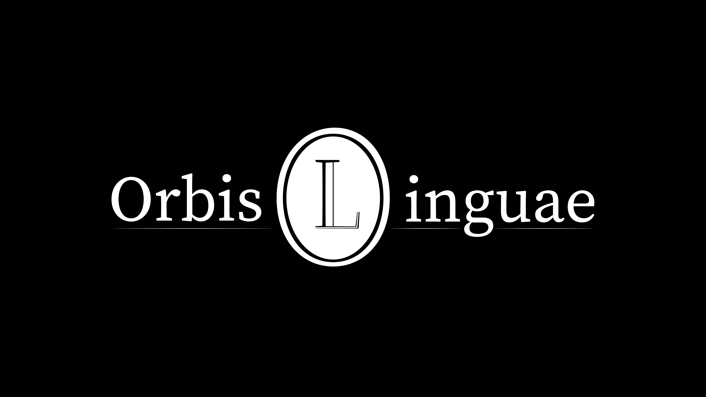
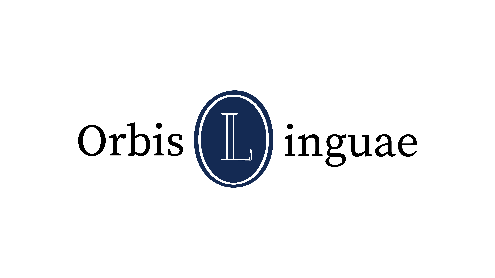

Orbis Linguae logo
Tijdelijk bedrijf, blijvende uitstraling
Voor het tijdelijke project Orbis Linguae, een vertaalbureau dat masterstudenten aan de Vrije Universiteit Brussel runden, ontwierp ik een logo dat zorgde voor een nieuwe uitstraling van het bedrijf. Ik creëerde het logo met kleuren, het lettertype en de vorm, zodat het geheel goed aansluit bij de merkidentiteit.
Download
PDF • 148kB

